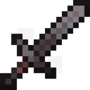

Na tej stronie przedstawione są cudowne narzędzia z gry Minecraft. Gra została wydana w 2009 przez studio Mojang, które zostało wykupione przez Microsoft w 2014 roku.
| Opis narzędzi |
| Ankieta |
| Źródła |
Narzędzia (ang. Tools) – przedmioty używane przez gracza, by wykonywać pewne akcje szybciej, zdobyć materiały niemożliwe do zdobycia przy pomocy rąk. Wszystkie narzędzia, poza kompasem, zegarem, wiadrem, smyczą i znacznikiem, da się zakląć. Narzędzia się nie grupują. Można naprawić je w kowadle za pomocą innych narzędi tego samego rodzaju.


Pierwsze sześć narzędzi, czyli miecz, kilof, siekiera, łopata oraz motyka mogą być wytwarzane z 5 różnych materiałów: drewna, kamienia, żelaza, złota, diamentów oraz neterytu (w chwilę obecną nie jest on jeszcze dostępny w najnowszej wersji gry)
Najlepsze 3 narzędzia według Jakuba Komorowskiego
- Wędka
- Kilof
- Miecz
Wybierz swoje ulubione narzędzie
Źródła
minecraft.net
Minecraft [artykuł z wikipedii]
Minecraft Wiki